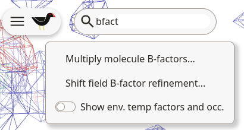
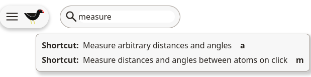
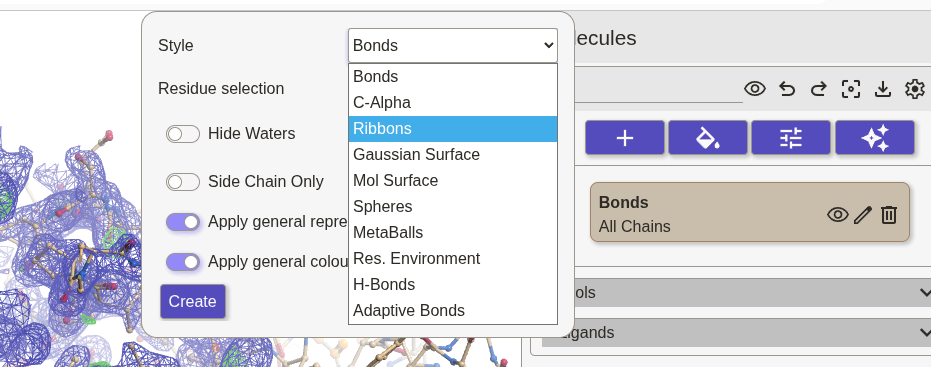

Welcome to Moorhen (“Coot on the Web”)
- Open a web browser window and go to moorhen.org.
Getting Started
Let’s load some data:
- File → Load Tutorial Data … → Tutorial 1 → OK

Moorhen displays a protein model with a blue 2Fo−Fc-style map and a green/red Fo−Fc-style difference map.
Technical note: The difference (Fo−Fc) map shows green (positive) peaks where the model has too little electron density, i.e. where atoms should be added, and red (negative) peaks where it has too much density, i.e. where atoms should be removed.
- Use Left-Mouse click and drag to rotate the view. (just click and drag, when using at trackpad)
- Use scroll-wheel scroll to zoom in and out (use 2-finger drag on a trackpad)
- Use middle-mouse click to centre on an atom (use Ctrl(Option on a Mac) + click on a trackpad)
- To pan the view, use middle-mouse click and drag (use Shift Option click and drag on a trackpad on a Mac)
You can change the speed that moving the mouse spins the view, and adjust other display preferences:
- Preferences → “Mouse Sensitivity” → 0.4 (# for example)
- Click off the Preferences dialog to make the dialog disappear.
- Change the zoom sensitivity using the “Mouse wheel zoom sensitivity” slider (a value of around 7 to 8 is more useful than the default).
- Change the thickness of the map lines using “Map contour settings…”.
- Use “[” and “]” on the keyboard to adjust the radius of the density.
- Use Ctrl middle-mouse scroll to change the contour level (one step at a time seems good to me).
Search Bar
If you have forgotten where a function is located, it can be searched for using the search bar: a quick way to find what you are looking for.
- Type in a few letters of the function you are looking for. Moorhen will show you a list of matching functions.
- Click on the item you want, like a normal menu item.

Shortcuts can also be found in the search bar:

Sequence Viewer

At the bottom of the screen, you will see the sequence of the loaded model.
- Click on any residue to center the view on it.
- Click on the gear icon to modify parameters (change which model is displayed, the number of sequence lines displayed, and the column width)
Models
- Click on the Models button.
The model panel opens. The top panel shows the current molecule representations.

- Click on the + icon to add a new representation of the model.
- Select the style “ribbons” and click OK to make a new ribbons representation.
- Click on the eye icon to hide the model representation for now.

Maps
- Click on the Maps button.
The Maps panel opens. The top panel shows the current maps loaded in the session. The 2Fo-Fc-style map has a blue icon and the difference map has an icon with red and green. Use the sliders to adjust the contour level:
Technical note: The contour level is the density threshold at which the map is drawn, raise it to show only the strongest features, lower it to reveal weaker density. Moorhen quotes each level twice: as an absolute density value and as a multiple of the map rmsd (its noise level). The suggested values below (0.42/1.40 rmsd for the 2Fo−Fc map, and 0.53/3.6 rmsd for the difference map) are good starting points.
- Click or slide the slider for the 2Fo-Fc map so that the level is about 0.42 (1.40 rmsd) or thereabouts.
- Set the difference map to a level of around 0.53 (3.6 rmsd), if it isn’t already.
- Hide the panels by clicking on the panel icon in the tab, or close them by clicking the X.
- Use Ctrl scroll-wheel scroll to change the contour level of the currently active map.
Let's start with Tutorial 1.